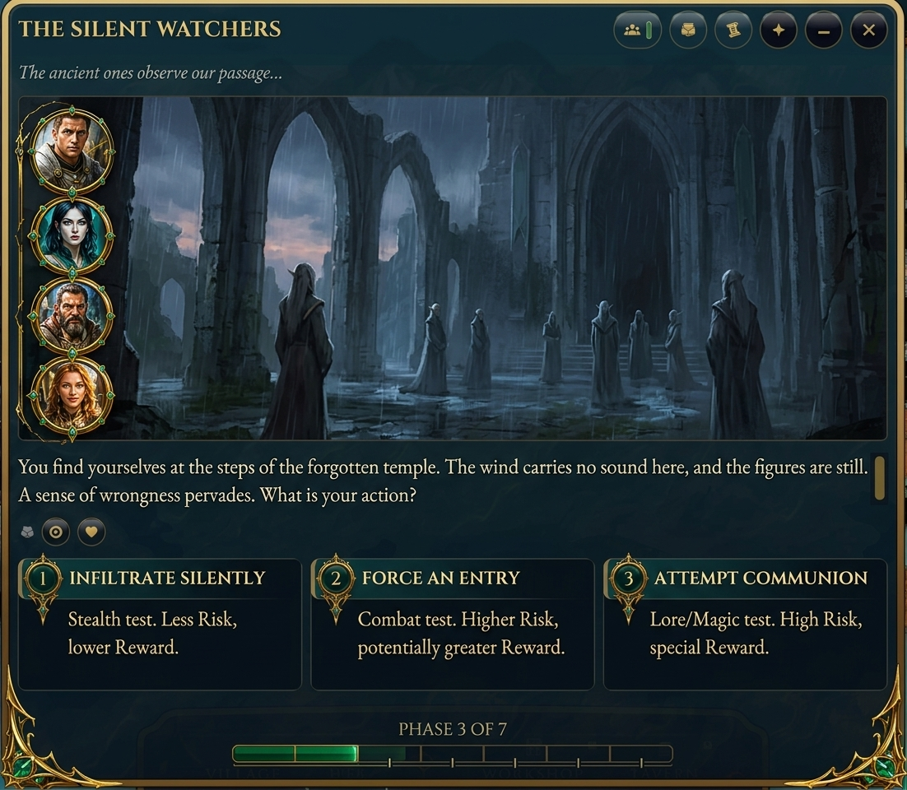

B — confronto: la tua scelta vs i miei ritocchi
PLANNER — cosa hai scelto (OPT-3 originale) vs la mia variante wide
ORIGINALE OPT-3 — dossier su mappa (la tua scelta)

Mia variante wide (più larga, rail ritratti sulla mappa)

RUN — la direzione che ti piaceva (Ancient Relic ChatGPT) vs il mio ritocco
ANCIENT RELIC — direzione firmata: testo/pulsanti SEMI-TRASPARENTI sopra la scena

Mio ritocco — pannelli OPACHI sotto il teatro (perso il valore cinematografico)

RUN v3 — la trasparenza ripristinata (nuovo candidato)
run-glass — scena protagonista + vetro scuro semi-trasparente: beat, placche, strip fase, rail party sul bordo, 6 bottoni title rail

Cosa il ritocco ha perso (da ripristinare)
- Trasparenza — testo beat e placche scelta galleggiano semi-trasparenti SOPRA la scena → la scena resta protagonista ovunque, non solo sopra
- Party rail — medaglioni verticali a sinistra sospesi sulla scena (ambient, non una colonna separata)
- Pulsanti ricchi — placche scelta con badge numerico + effetto, ornate ma leggibili sul vetro scuro
- Composizione immersiva — la cornice è il palcoscenico stesso, non una finestra sopra un rettangolo
- Da mantenere del ritocco — sezione dedicata non-modal + Action Deck + phase strip + dati permanenti rimossi nei pannelli laterali